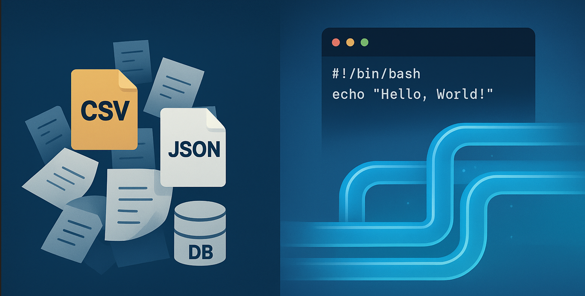

📌 Create an API to expose processed data.
Fetch and filter data with REST endpoints.
Use pandas & FastAPI to serve analytics.
🔧 Tools: FastAPI, SQLite, Pandas.
🎯 Use case: Expose analytics as an API.

Automatically detects encrypted password files modified within the last 24 hours.
Creates secure backups of these updated files to a designated backup directory.
This project demonstrates Linux system administration, shell scripting, automation, and security-conscious development practices.
🔧 Tools: Linux(Ubuntu/CentOS/Debian), Bash, Cron, find, cp, tar, gzip.
🎯 Use case: file backup, file management automation.
Use WSL Postgres and MySQL for db backup and restore.
Backup, Restore, create non-clustered indexes
create roles and priveleges and database backup automation
using shell scripting and db GUI management tools.
🔧 Tools: MySQL, Postgres, Bash, pgAdmin4.96, cron.
🎯 Use case: Database management and security.
Create a DAG (Directed Acyclic Graph) in Apache Airflow.
Extract CSV files, process them with Pandas, and load them into PostgreSQL.
Automate daily/weekly runs.
🔧 Tools: Apache Airflow, Python, Pandas, PostgreSQL.
🎯 Use case: Automate reporting for sales, weather, or sports data.
Set up PostgreSQL as a local data warehouse.
Load large datasets using psycopg2 and transform them with SQL.
Optimize queries using indexing and partitions.
🔧 Tools: PostgreSQL, Python (psycopg2), dbt (optional).
🎯 Use case: Retail sales analytics, financial transaction analysis.
Set up Kafka locally to stream real-time data (e.g., Twitter or stock prices).
Use Python (Faust) or Spark Streaming to process events.
Store data in PostgreSQL for analysis.
🔧 Tools: Apache Kafka, Python (Faust), Spark, PostgreSQL.
🎯 Use case: Real-time social media monitoring or fraud detection.
Scrape job postings (e.g., Indeed, LinkedIn) using Selenium or Scrapy.
Store the data in a PostgreSQL/MySQL database.
Query and visualize data using Streamlit.
🔧 Tools: Python, Scrapy/Selenium, PostgreSQL/MySQL, Streamlit.
🎯 Use case: Analyze job trends, pricing trends, or product reviews.